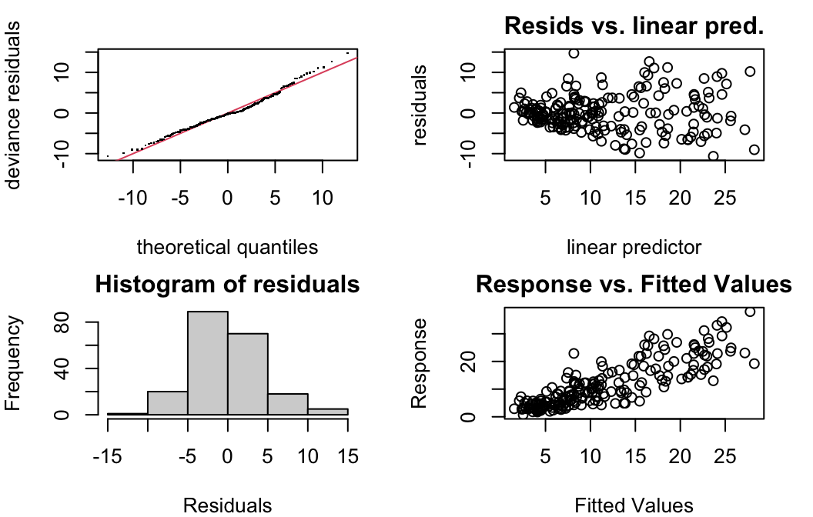

bats <- read.csv('https://ndownloader.figshare.com/files/9348010')18 GAMs: Generalized Additive Models
So far, we have learned ways to model continuous, logical, and count response variables as functions of quantitative and categorical predictors. We started with linear models - where both the response and predictor variables are quantitative and the relationship between them is linear. What about nonlinear relationships?
So far, we have considered…
- Categorical predictor variables. Making use of indicator variables for (all but one of the) categories, we can model a situation where each value of the predictor variable has a different effect on the response. But…
- How many categories?
- What about periodicity?
- GLMs. In logistic, Poisson, etc. regression, the action of the link function results in a relationship between the predictors and the response variable that is linear on the scale of the link function ( = scale of the RHS of the equation), but non-linear on the scale of the response variables (LHS). But…
- Nonlinear, but monotonic
18.1 Non-linear, non-monotonic relationships
It’s not true that all interesting predictor-response relationships are linear or monotonic. One example is in some data on bat migration: how does the probability of bats leaving on their migratory journey depend on air humidity?
Another dataset (our example for the day) – ozone levels as a function of temperature, day, and humidity:
ozone <- read_csv('https://raw.githubusercontent.com/selva86/datasets/master/ozone.csv') |>
mutate(Date = lubridate::mdy(paste(Month, Day_of_month, '2018')),
Day = lubridate::yday(Date))
gf_point(ozone_reading ~ Temperature_Sandburg,
data=ozone, alpha=0.4, ylab = 'Ozone')
gf_point(ozone_reading ~ Day,
data=ozone, alpha=0.4, ylab = 'Ozone')
gf_point(ozone_reading ~ Humidity,
data=ozone, alpha=0.4, ylab = 'Ozone')18.2 Smooth terms
We can fit a model where the relationship between the response and the predictor is a ``smooth” – no linearity or monotonicity requirement.
18.2.1 Basis functions
- A smooth term is constructed as the sum of several parts, or basis functions. Each of these functions has a relatively simple shape, but scaled and added together, they can produce nearly any ``wiggly” shape.
- Increasing the dimension of the basis (more functions added together) can allow more wiggliness.
- Goal: allow enough wiggliness to fit the data well, without overfitting (smooth goes through every point in the data, or follows ``trends” that are spurious)
We will fit smooth models to data using the function gam() from the package mgcv. It includes many options for basis functions (types of smooths) - see ?mgcv::gam or [https://rsconnect.calvin.edu:3939/content/28/] for details.
18.3 Fitting GAMs
An excellent resource: https://converged.yt/mgcv-workshop/.
18.3.1 Choosing model formulation
Which terms should be modelled as smooth terms? Explore the data!
- Pros:
- Cons:
18.3.2 Model formula
Let’s fit a simple GAM for the ozone data as a function of radiation, temperature and wind. Note the s() function for specifying a smooth, which takes as input:
- a variable name (or more than one, for advanced users)
kbs
How do we choose? For some exploration, see: [https://rsconnect.calvin.edu:3939/content/28/].
We can also fit the model and smooths by different methods and with options:
method = 'GCV.Cp'method = 'REML'method = 'ML'select = TRUE(orFALSE)
library(mgcv)
oz.gam <- gam(ozone_reading ~ s(Day, k = 7, bs = 'cc') +
s(Wind_speed, k = 5, bs = 'tp') +
s(Temperature_Sandburg,
k = 5, bs = 'tp'),
data = ozone,
method = 'ML',
select = TRUE)
summary(oz.gam)
Family: gaussian
Link function: identity
Formula:
ozone_reading ~ s(Day, k = 7, bs = "cc") + s(Wind_speed, k = 5,
bs = "tp") + s(Temperature_Sandburg, k = 5, bs = "tp")
Parametric coefficients:
Estimate Std. Error t value Pr(>|t|)
(Intercept) 11.3740 0.3163 35.96 <2e-16 ***
---
Signif. codes: 0 '***' 0.001 '**' 0.01 '*' 0.05 '.' 0.1 ' ' 1
Approximate significance of smooth terms:
edf Ref.df F p-value
s(Day) 3.641 5 4.93 2.1e-05 ***
s(Wind_speed) 1.180 4 0.77 0.0696 .
s(Temperature_Sandburg) 3.283 4 45.87 < 2e-16 ***
---
Signif. codes: 0 '***' 0.001 '**' 0.01 '*' 0.05 '.' 0.1 ' ' 1
R-sq.(adj) = 0.697 Deviance explained = 71%
-ML = 604.6 Scale est. = 20.309 n = 20318.4 Model Assessment
In addition to what you already know (…which all still holds, except linearity expectation!) mgcv has some nice model checking functions built in.
par(mar=c(4,4,2,2))
gam.check(oz.gam)
Method: ML Optimizer: outer newton
full convergence after 10 iterations.
Gradient range [-0.000846257,0.001371855]
(score 604.6047 & scale 20.3091).
Hessian positive definite, eigenvalue range [0.0003470333,101.5511].
Model rank = 14 / 14
Basis dimension (k) checking results. Low p-value (k-index<1) may
indicate that k is too low, especially if edf is close to k'.
k' edf k-index p-value
s(Day) 5.00 3.64 0.86 0.015 *
s(Wind_speed) 4.00 1.18 1.14 0.990
s(Temperature_Sandburg) 4.00 3.28 1.10 0.930
---
Signif. codes: 0 '***' 0.001 '**' 0.01 '*' 0.05 '.' 0.1 ' ' 1
18.4.1 Concurvity
Like collinearity and multicollinearity, but for smooths…values of 0 indicate no problem, and 1 a huge problem (total lack of identifiability – same information in multiple predictors).
Overall, does the model have problems with concurvity?
concurvity(oz.gam, full=TRUE) para s(Day) s(Wind_speed) s(Temperature_Sandburg)
worst 2.191674e-20 0.6717847 0.2733692 0.6505342
observed 2.191674e-20 0.1609172 0.1601073 0.6453322
estimate 2.191674e-20 0.2421204 0.2119838 0.5270197Or alternatively, which specific pairs of terms cause problems?
concurvity(oz.gam, full=FALSE)$worst
para s(Day) s(Wind_speed)
para 1.000000e+00 6.612020e-32 1.595828e-29
s(Day) 1.243525e-31 1.000000e+00 2.476773e-01
s(Wind_speed) 2.467911e-29 2.476773e-01 1.000000e+00
s(Temperature_Sandburg) 2.081406e-20 6.398944e-01 2.054144e-01
s(Temperature_Sandburg)
para 2.081412e-20
s(Day) 6.398944e-01
s(Wind_speed) 2.054144e-01
s(Temperature_Sandburg) 1.000000e+00
$observed
para s(Day) s(Wind_speed)
para 1.000000e+00 1.710467e-32 1.312129e-30
s(Day) 1.243525e-31 1.000000e+00 8.351370e-02
s(Wind_speed) 2.467911e-29 9.567723e-02 1.000000e+00
s(Temperature_Sandburg) 2.081406e-20 6.230468e-02 7.925646e-02
s(Temperature_Sandburg)
para 7.645727e-23
s(Day) 6.353482e-01
s(Wind_speed) 8.030772e-02
s(Temperature_Sandburg) 1.000000e+00
$estimate
para s(Day) s(Wind_speed)
para 1.000000e+00 1.411658e-32 9.541351e-31
s(Day) 1.243525e-31 1.000000e+00 1.685925e-01
s(Wind_speed) 2.467911e-29 7.801012e-02 1.000000e+00
s(Temperature_Sandburg) 2.081406e-20 1.970558e-01 8.331840e-02
s(Temperature_Sandburg)
para 1.703578e-22
s(Day) 4.902313e-01
s(Wind_speed) 9.916508e-02
s(Temperature_Sandburg) 1.000000e+0018.5 Model Selection
18.5.1 Shrinkage and Penalties
With GAMs, in a sense, some model selection is (or can be) done during model fitting - what smooth is best? Or is the relationship a line? A flat line? Using shrinkage basis or including select=TRUE allows for this.
18.5.2 P-value selection
Cautions: p-values are approximate! Successfulness of the procedure best when fitting method is: ML (1st choice), REML (2nd choice).
anova(oz.gam)Interpretation as usual. Note that anova() (not Anova()) works here - especially for GAMs, it does not do sequential tests; and Anova() doesn’t handle GAMs.
18.5.3 Information criteria
- Conditional/Approximate - bias
- Fitting method:
- REML-based IC scores can be used to compare models with different random effects but not different predictors. (IF
select = TRUEand using a shrinkage basis.) - ML-based IC scores can be used to compare models with different fixed effects (regular predictors) and different
family, but not different random effects
- REML-based IC scores can be used to compare models with different random effects but not different predictors. (IF
library(MuMIn)
oz.ml <- update(oz.gam, method='ML', na.action='na.fail')
head(dredge(oz.ml, rank='AIC'),2)Global model call: gam(formula = ozone_reading ~ s(Day, k = 7, bs = "cc") + s(Wind_speed,
k = 5, bs = "tp") + s(Temperature_Sandburg, k = 5, bs = "tp"),
data = ozone, na.action = "na.fail", method = "ML", select = TRUE)
---
Model selection table
(Int) s(Day,7,"cc") s(Tmp_Snd,5,"tp") s(Wnd_spd,5,"tp") df logLik AIC
8 11.37 + + + 11 -589.011 1201.6
4 11.37 + + 10 -591.448 1203.0
delta weight
8 0.00 0.666
4 1.38 0.334
Models ranked by AIC(x)